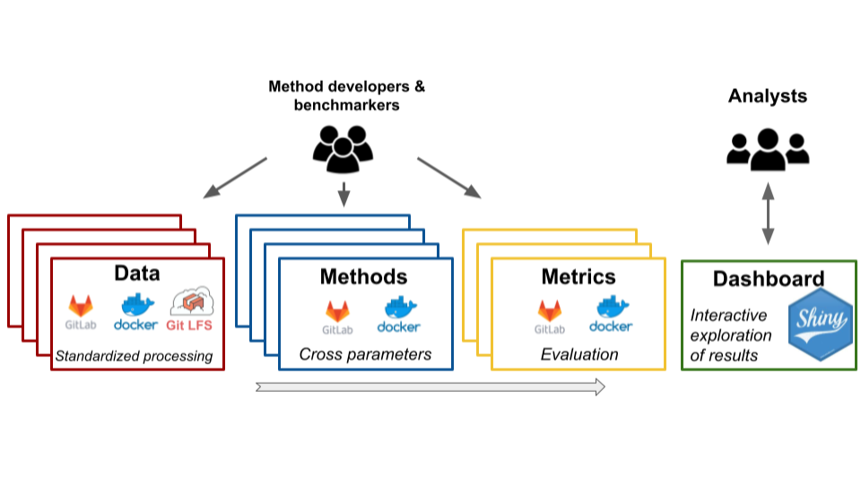
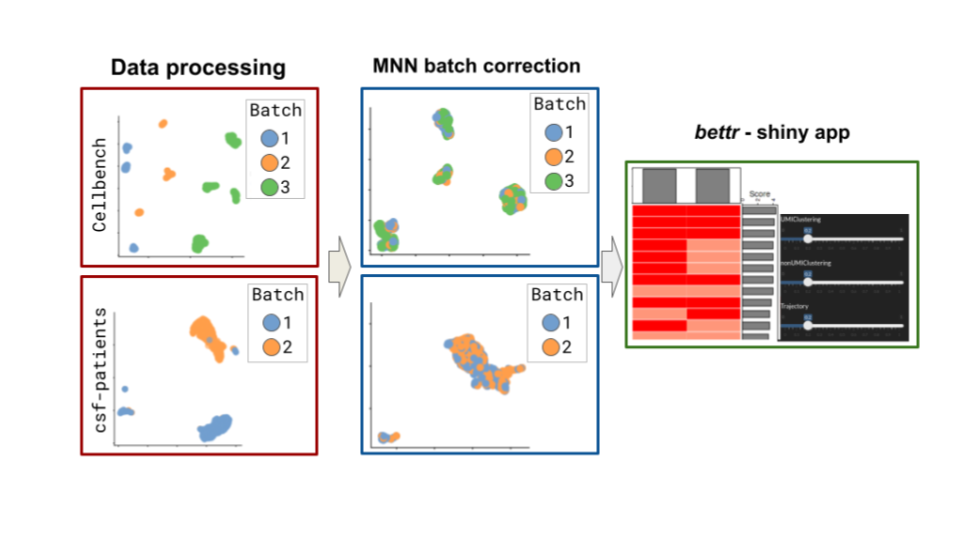
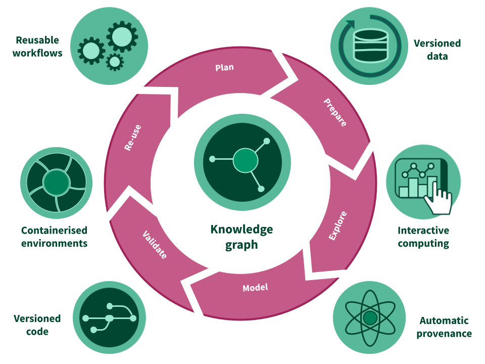

Continous benchmarking of single cell tools using renku
A framework for open and continuous community benchmarking of bioinformatic tools
Project Website: https://RenkuLab.io/
Source code: https://renkulab.io/gitlab/omnibenchmark
License: Apache License, Version 2.0
Almut Luetge1,2 Anthony Sonrel1,2 Oksana Riba Grognuz3 Izaskun Mallona Gonzalez1,2 **Charlotte Soneson2,4 Pierre-Luc Germain1,2,5 Federico Marini6 Gavin Lee3 Tao Sun3 Christine Choirat3 Rok Roškar3 Mark D. Robinson1,2
1 Institute for Molecular Life Sciences, University of Zurich, Switzerland
2 SIB Swiss Institute of Bioinformatics, Switzerland
3 Swiss Data Science Center, ETH Zurich and EPFL, Switzerland
4 Friedrich Miescher Institute, Basel, Switzerland
5 D-HEST Institute for Neurosciences, ETH Zürich
6 Center for Thrombosis and Hemostasis (CTH), Johannes Gutenberg University Mainz
BACKGROUND
Benchmarking is a critical step for the development of bioinformatic methods and provides important insights for their application.
The current benchmarking scheme has many limitations:
- it is a
snapshotof the available methods at a certain time point - it can be
outdated, already at the time of a publication comparison of benchmarks is challenging: different procedures, different datasets, different evaluation criteria, etc.- all of the above can lead to
different conclusionsamong benchmarks made at different time points or at different groups.
CONCEPT:
→ Here we propose a new modular and extensible framework based on a free open-source analytic platform, RENKU, to offer a continuous and open community benchmarking system.
→ The framework consists of data, method and metric repositories (or “modules”) that are connected via a knowledge graph from the RENKU system.
→ The results could then be displayed in an interactive dashboard to be openly explored by any analyst looking for recommendations of tools
→ Any new data, method or metric can be added by the community to extend the benchmark
Key features of the developed benchmarking framework:
- Update the results of the benchmark periodically to provide the analysts with the latest recommendations
- Be easily extended thanks to templates for data, methods or metrics
- Fully follow the
FAIR principlesthanks to a Docker image system, an integration with Gitlab and the fullprovenance(tracking of inputs, commands and generated files) - Use a variety of programming languages commonly used in bioinformatics: R, Python, Bash, Julia,…

PROTOTYPE
Based on the above concept, we are currently building a prototype for community-based benchmarking of single cell batch correction methods.
The research in single-cell is a perfect use-case, where 900 tools have been developed in only a few years [https://www.scrna-tools.org/] and where the benchmarking efforts are often not coordinated, not extendable and not reproducible.
Our prototype consists of:
- Two datasets of 2370 genes x 3613 cells separated in 2 batches and 1401 genes x 13575 cells separated in 3 batches (Su et al. 2020; Lütge et al. 2021)
- Common preprocessing consisting of normalization, highly-variable genes selection, dimensionality reduction.
- An integration using the MNN method (Haghverdi et al. 2018)
- Evaluating batch-effect using the LISI metric (Korsunsky et al. 2019) and cms score (Lütge et al. 2021)
- Exploring the results using the bettr (Marini and Soneson 2021)


RENKU is an open and collaborative platform which provides a knowledge infrastructure for the entire research life cycle. The platform and its tools are built on top of a stack of open-source components and aims to make data science reproducible.
On RENKU:
Fully interactive sessions can be accessed through the browser, with no local installation needed
Versioning and containers ensure precise and reproducible computational environments
Datasets and workflows are automatically tracked in a
knowledge graph, which can be queried from within a project, a group of projects or even across deploymentsWorkflows can be re-run or updated automatically when inputs such as datasets or scripts change
CI/CD can be leveraged to automate repetitive and predictable tasks, such as fetching results of a piece of analysis to integrate into a dashboard

References
Haghverdi, Laleh, Aaron T. L. Lun, Michael D. Morgan, and John C. Marioni. 2018. “Batch Effects in Single-Cell RNA-Sequencing Data Are Corrected by Matching Mutual Nearest Neighbors.” Nature Biotechnology 36 (5): 421–27. https://doi.org/10.1038/nbt.4091.
Korsunsky, Ilya, Nghia Millard, Jean Fan, Kamil Slowikowski, Fan Zhang, Kevin Wei, Yuriy Baglaenko, Michael Brenner, Po-ru Loh, and Soumya Raychaudhuri. 2019. “Fast, Sensitive and Accurate Integration of Single-Cell Data with Harmony.” Nature Methods 16 (12): 1289–96. https://doi.org/10.1038/s41592-019-0619-0.
Lütge, Almut, Joanna Zyprych-Walczak, Urszula Brykczynska Kunzmann, Helena L. Crowell, Daniela Calini, Dheeraj Malhotra, Charlotte Soneson, and Mark D. Robinson. 2021. “CellMixS: Quantifying and Visualizing Batch Effects in Single-Cell RNA-Seq Data.” Life Science Alliance 4 (6). https://doi.org/10.26508/lsa.202001004.
Marini, Federico, and Charlotte Soneson. 2021. Bettr: A Better Way to Explore What Is Best. https://github.com/federicomarini/bettr.
Su, Shian, Luyi Tian, Xueyi Dong, Peter F Hickey, Saskia Freytag, and Matthew E Ritchie. 2020. “CellBench: R/Bioconductor Software for Comparing Single-Cell RNA-Seq Analysis Methods.” Bioinformatics 36 (7): 2288–90. https://doi.org/10.1093/bioinformatics/btz889.